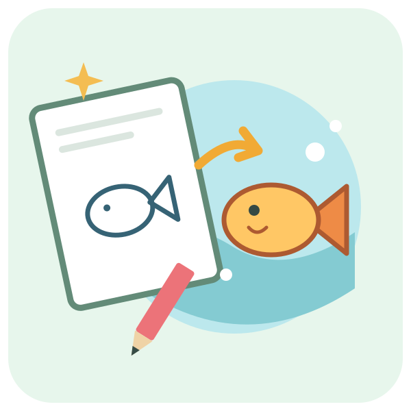

Laat je tekeningen tot leven komen
Ontdek het aquarium, de bloementuin, de ruimtewereld en het fantasiebos. Kies een tekenblad in de bibliotheek of probeer de testomgeving.
Open Zisa's tekenwereld ↗De tekenwereld opent in een nieuw tabblad. Deze pagina blijft open. Sluit na het tekenen dat tabblad en kies hierboven ‘Terug naar de tools’.
De bibliotheek en testomgeving zijn zonder aanmelding te gebruiken. Voor tekeningen bewaren en iPads verbinden meld je je in de tekenwereld aan als leerkracht.